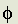
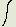
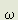

THE THEORY OF GRAVITATION
CONTINUATION
Copyright © Harold Aspden, 1960, 1998
This is a reproduction of the text of a booklet written by the author in 1959, published early in 1960. This continuation comprises Chapters 4 to 7 of that work. In the light of his 1998 perspective, some 38 years on from that 1960 effort, the author has added several notes bearing the symbol  . These may interest science historians who, hopefully, one day will seek to track how the author's theory developed over time.
. These may interest science historians who, hopefully, one day will seek to track how the author's theory developed over time.
4
THE FORCE OF GRAVITY
Preliminary Note
An important question concerning gravitation is, "Does all mass gravitate?" Mass has inertial and gravitational properties, but is the inertial mass of a body exactly equal to its gravitational mass? The Theory of Relativity requires the answer to this question to be definitely affirmative and, indeed, this was the conclusion reached as early as 1891 by Eotvos [6]. However, in accepting this as an established fact, those who attempt to explain gravity by the relativistic approach are ignoring a discrepancy found in highly accurate experiments by Aston [7].
These experiments have pointed to a difference between the ratios of the inertial masses and gravitational masses of the preponderant isotopes of hydrogen and oxygen. Aston detected a difference 0.00004+/-0.00002 between the mass number and chemical atomic weight of hydrogen on the oxygen scale and wrote, "This is a serious discrepancy.... It must be concluded that the discrepancy between the isotopic weights of hydrogen and oxygen is at present unaccountable and further work upon the matter is desirable."
This discovery of Aston hints at the possibility that the fraction 0.00004 of the atomic mass of hydrogen may be nongravitating in character. Perhaps the hydrogen atom contains a non-gravitating particle of mass equal to this fraction of the mass 1.673x10-24 gm. of the atom. Allowing for the limits of error in Aston's experiments the mass of this particle will be between 3.3x10-29 gm. and 10-28 gm., a range which includes the value m of this theory.
There is the hint of a suggestion that the neutrino is gravitationally neutral as well as electrically neutral, and this is coupled with a suggestion that there is a neutrino in every hydrogen atom. The implications of this lead directly to the quantitative evaluation of the Universal Constant of Gravitation.
�
Reading the above after some 40 years since it was written, I now wonder whether what I quoted from the Aston book (1933 date) was overtaken by the discovery of the heavier isotopes of hydrogen, namely deuterium and tritium. Obviously, a point of such a nature by such an authority, would have attracted much attention in later years, if the problem did persist. So we shall move on here without further regard to this indirect experimental implication of a mass unit corresponding to that of the aether particle of my theory.
This Chapter describes how I first came to see the aether continuum of charge density as being the seat of gravitational action. The action had to be that of electric charge in motion but yet that of an electrically neutral unit having a mass property. A hole in the charge continuum neutralized by a balancing charge in orbit within the bounds of that hole gave the parameters needed to develop a quantitative and qualitative connection between the force of gravity and electrodynamic action.
The result was captivating. It represented progress and that gave one something on which to build, something far removed from wandering in a wilderness looking for a new equation that might provide a unifying link between the symbols used by the physicist versed in Relativity. Equation (24) seemed to be the answer I was seeking because it was not 'discovered'. It simply emerged from analysis which recognized how electrodynamic action could develop a mutually attractive force in a universal omnipresent medium agitated by the mass property of matter.
Once I had the result which equation (24) offered, I was ready to move on to see if I could go further and deduce the proton/electron mass ratio by pure theory. I had been inspired by Eddington's efforts in that regard.
In the event, however, I was later to discover that much of what I describe in this chapter 4 is best forgotten. It was later replaced by something truly wonderful as a theory for G and M. Indeed, only the feature of that dynamic mass balance involving 'gravitons' embodied in the charge continuum as the seat of gravitational action was to remain as the basis on which to build the final theory.
That said, however, there remains a lingering doubt concerning what is described by reference to Fig. 1, as I shall explain in the note at the end of this chapter 4.
The Gravitational Mass Unit
Ideally all massive bodies may be regarded as consisting
of units of a fundamental mass quantity which will be denoted
M. This ideal will be reviewed in a later chapter, and the value of M of such a unit will be calculated by applying this theory, but, for the present purpose, it suffices to accept this simple hypothesis.
An examination of the converted photon system having the neutral particle of mass m and velocity moment 2cr shows that in spite of the momentum balance there is a dynamic out-of-balance. A dynamic balance can be obtained without upsetting the analysis of the momentum balance or the evaluation of the magnetic moment er provided a relatively heavy particle acts as a counter-balance to the neutral particle of mass m. This heavy particle of mass M is regarded as disturbing the continuum to produce at its mass centre a concentrated portion of the continuum within a spherical hole left by the charge so concentrated. This simple hypothesis leads immediately to the gravitation constant. Logically, the centre of this hole will be the centre of gravity of M and m and the radius of the hole will be the radius of the orbit of M. Thus, as M is balancing a mass m moving at velocity c/2 at radius 4r:
(1) The position of the mass M is not fixed in the inertial frame but describes a circular orbit of radius 4r(m/M) with a velocity V=(c/2)(m/M).
(2) The particle will exhibit zero net electrostatic effect at points remote from the hole because the charge of the particle balances the charge missing from the hole.
(3) The position of the hole is fixed in the inertial frame of reference, which means that the hole itself gives rise to no negative magnetic effects.
(4) The particle M has a charge (denoted q) of (4 /3)(4rm/M)2 and the motion of this charge gives rise to a magnetic field and an associated magnetic force between M and all other units M and charges in motion.
/3)(4rm/M)2 and the motion of this charge gives rise to a magnetic field and an associated magnetic force between M and all other units M and charges in motion.
As with the aether particle system all the units M will, by virtue of their electrical character, their mutual reaction and their reaction with the aether particle system, move in synchronism with one another. The force of magnetic attraction between all pairs of particles of mass M will be q2V2/c2 at unit separation distance. The value of the universal constant of gravitation G is therefore given by:
G = q2V2/c2M2 .......(22)
Substituting the values of q and V just presented:
G = (4/3)2(4rm/M)6(cm/2M)2/(cM)2 .....(23)
M is taken to be of the order of the mass of the hydrogen atom 1.673x10-24gm, m is 3.714x10-29 gm., r is 1.93x10-11 cm., c is 2.998x1010 cm/sec, and is 1.857x1021 esu/cc. Using these values in equation (23) gives the known value of the constant G.
It is to be noted that there will be no unidirectional mean force between the mass units and aether particles because they are not moving in synchronism; the aether particles orbit at four times the frequency of the mass units. The magnetic moment of the mass unit M is very small, as may be verified from the data given; it will not produce a measurable magnetic effect.
It is a matter of algebra to show that equation (23) can be presented in the form:
G = (e/me)2(me/M)10(hc/2e2)22/36225820 ......(24)
This equation involves only experimental quantities. Using the known values:
e/me = 5.27299x1017 esu/gm
me = 9.1085x10-28 gm
hc/2e2 = 137.0377
G = 6.668x10-8 cgs
The equation is satisfied for a value of M of 1.67525x10-24 gm.
The Evaluation of M
The fundamental unit of gravitational mass M is closely equal to the mass energy of an electron-positron pair oscillating to have a magnetic field angular momentum of h/.
Consider an electron-positron pair formed by charges +e and -e moving in generally inclined directions at the same velocity v. It can be shown that the magnetic field of this system has a definite angular momentum which ranges from zero when the motions are parallel or anti-parallel to a maximum when they are directed at right angles to one another. For unit quantization of field angular momentum the smaller the inclination between the motions of the electron and the positron, the greater their kinetic energy. For least energy they will move at right angles to one another. Such a system will now be considered with reference to Fig. 1. The system comprises the two charges +e and -e rotating in a common circular orbit of radius r with velocity v and an angular displacement in the orbit of 90o.
If one charge has been accelerated from rest after the other has acquired its steady velocity v, the magnetic field of the newly-accelerated charge is bounded by a boundary which spreads outwards at the speed of light and it is possible to show that this requires a transfer of the original field energy of the system in an angular sense about an axis perpendicular to the plane of the charge orbit.
 Fig. 1
This is readily understood from a consideration of Fig. 1. Let the velocity of the charge -e have been established after that of the charge +e and imagine the magnetic field wave boundary to be at the position shown. The magnetic field energy denmsity at a point P will be given by an expression such as (1/8)(H1+H2)2, whereas that at Q will be given by an expression such as (1/8)(H1-H2)2, where H1 and H2 are the field components due to +e and -e respectively. The energy expressions apply within the wave boundary. Before the boundary reached P or Q the corresponding energy density at P and Q was simply (1/8)H12.
Fig. 1
This is readily understood from a consideration of Fig. 1. Let the velocity of the charge -e have been established after that of the charge +e and imagine the magnetic field wave boundary to be at the position shown. The magnetic field energy denmsity at a point P will be given by an expression such as (1/8)(H1+H2)2, whereas that at Q will be given by an expression such as (1/8)(H1-H2)2, where H1 and H2 are the field components due to +e and -e respectively. The energy expressions apply within the wave boundary. Before the boundary reached P or Q the corresponding energy density at P and Q was simply (1/8)H12.
It is therefore evident that in passing through P and Q the wave causes a transfer of energy between P and Q because P gains energy density by an amount (1/8)(2H1H2+H22) and Q loses energy density by an amount (1/8)(2H1H2-H22). The quantity of energy (1/4)(H1H2) is transferred from Q to P by the passage of the wave, and this transfer must presumably occur around the wave region. This transfer of energy gives rise to a field momentum.
Since, using the symbols shown in Fig. 1, H1 and H2 are:
(+ev/c)sin cos
cos
/(OP)2 and (-ev/c)sin cos
cos /(OP)2 respectively, and cos=sincos, it may be proved that:
/(OP)2 respectively, and cos=sincos, it may be proved that:
(1/4)(H1H2) = -(ev/c)2sincoscos/4(OP)4 .......(25)
A resolution of the energy density velocvity moment about the orbital axis of the charges is achieved by multiplying this expression by u(OP)cos, where u is the perihpheral energy speed paramter in the wave boundary at P or Q about the orbital axis.
When averaged for all values of , cos2 becomes 1/2, and the energy velocity moment of an elemental portion of the boundary region is found by further multiplication of the expression (25) by 2(OP)sin, (OP)d and cdt to obtain:
-(ev/c)2usin2coscdtd/4(OP) .......(26)
Here cdt is a measure of the radial thickness of the wave front. It may be shown that u is (OP)2/dt because 2 is the angle through which energy is exchanged. Thus the magnitude of the net velocity moment becomes:
(1/2c)(ev)2
sin2cosd = (/12 - 1/9)(ev)2/c .....(27)
Here the integral is between 0 and /2.
This expression is independent of OP and therefore does not depend upon time. This represents angular momentum when divided by c2. Thus the field angular momentum is:
(/12 - 1/9)(ev)2/c3,
and we take this to equal h/ to obtain the basic quantum condition:
hc/2e2 = (/12 - 1/9)(v2/2c2) ......(28)
Consider now the energy of the system. The masses of the electron and positron are both equal and denoted me. The kinetic energy of the system is therefore mev2, having a mass equivalent me(v/c)2 or, from (28):

By applying equation (1), the magnetic energy of the system may be shown to be (ev/c)2[1/(2r)]. The electrostatic energy is -e2[1/(2r)]. The value of r, using that of the aether particle orbit, is h/4mec, giving the magnetic field energy as:
(ev/c)2(4mec/2h
or, in terms of equivalent mass, 2me(v/c)2(2e2/hc), which is simply:
(22me)/(/12 - 1/9).
The corresponding mass equivalent of the electrostatic energy is:
-(2e2/hc)2me.
Finally, to derive the total mass of this field angular momentum quantized electron positron pair it is necessary to add 2me as the basic rest mass of the pair. Thus the total mass M becomes:
 ......(29)
......(29)
This aether theory has accounted for the value of hc/2e2, and thwerefore the ratio M/me is derived from pure theory. Its value, for hc/2e2 of 137.0377, is 1839.57, whichm, for the known value of me of 9.1085x10-28 gm, gives M as 1.67557x10-24 gm. this differs from the value required to explain gravity by the arguments leading to equation (24) by only one part in 5,000.
�
Although I have abandoned the last section of this Chapter 4, as I review it now after some 40 years since I did the calculations, I still find that the argument has some appeal. I recall that I had read somewhere that a star might acquire its spin by having radiated angular momentum and, knowing that electrons and positrons exist in paired association in the theory of QED (quantum electrodynamics), I set about the task of checking to see if, perchance, each member of the electron-positron pair could acquire, by radiation reaction, an angular momentum quantum of Bohr's theory of the hydrogen atom.
When I discovered that the analysis based on conventional Lorentz field theory justified this proposition, albeit by theory involving superluminal spin velocities, and further that it implied a mass energy corresponding to that of the nucleus of the hydrogen atom, I was convinced that my hypothesis had merit.
However, key to that analysis was the assumption, a standard assumption adopted by physicists, that a discrete electric charge in motion produces a magnetic field in its immediate vicinity. That was the basis on which J J Thomson had determined the theoretical formula for the electromagnetic mass of the electron.
As I later found, that assumption is erroneous. A discrete electric charge in motion cannot, of itself, develop a magnetic field conforming with the Lorentz prescription. Indeed, it needs two oppositely-charged particles moving in opposite directions to set up the action which gives basis for the Neumann potential, which in turn can guide one to formulate the force equations that include the derived force law prescribed by Lorentz. An electron-positron pair moving in the manner illustrated in Fig. 1 above cannot develop magnetic field effects of the kind formulated by reference to that figure.
When one learns about electromagnetism in one's teaching, the teachers do not go back into the history of the subject to introduce what was known as the Fechner hypothesis, a topic mentioned in Clerk Maxwell's treatise. That is a precursor of a relevant aspect of QED. The starting point instead is usually linked to the consequences of transformation theory which complies with Einstein doctrine and merely smears all action of moving electric charge into a form indistinguishable from the field action of a section of an infinitely long straight current element. The mutual gravitational action as between two elements of mass moving in a common straight line cannot be explained as a magnetic force by unified field theory unless one is wrong in thinking that there is no magnetic field active at the seat of either charge. Yet the Lorentz doctrine tells us that the magnetic field is zero in the line of the vector motion of a discrete electric charge.
So, in summary, as one can see particularly by reference to the papers in the Appendix to my book Aether Science Papers, notably papers 6 and 14, [1988a] and [1995e] in the bibliography section of these web pages, I had to abandon the magnetic field theory leading to equation (29) in the section of Chapter 4 of this discussion. The proton mass was destined to emerge from the onward development of the theory when the creation of mesons and their presence in a virtual form in the aether came to light.
In contrast, the next Chapter, Chapter 5, holds its ground as firmly as it did on the day it was first discovered. It is at the very heart of this whole theory and it has spin-off features which hold promise for advances in technology by which to harness aether energy. However, in the 1950s when the theory was first discovered such a thought was undreamed of and beyond contemplation.
5
THE GEOMAGNETIC FIELD
Preliminary Note
As the aether has a physically-conceived structure we are able to "see" what happens to it when a part of it is caused to rotate, as with the earth, for example. Here, we find an advantage not shared with the Theory of Relativity. We can immediately deduce that an electrical property of the aether manifests itself when the aether is set in rotation.
The Effect of Aether Rotation
Consider what happens when a large volume of the aether is rotating bodily. The continuum and particle system rotate together. There will be no resultant magnetic moment unless the particle distribution is disturbed. An evident disturbance is the centrifugal effect arising from aether rotation, but for angular velocities of the magnitude found in the solar system this effect is of negligible consequence. A much more important effect arises from the synchronizing interaction between particles in the rotating volume. This requires that the particles shall move about their neutral points at the same angular velocity. Thus if a particle is to have a velocity component V directed in the plane of its orbit, whilst retaining a mean velocity c/2, its speed along its orbit must be of the form c/2+Vcos, where is the angle subtended by a line joining the particle and the centre of its orbit relative to a fixed reference datum in the inertial frame. To satisfy the above requirement the centre of the orbit cannot be the neutral point. Evidently the particle is distant from this neutral point by r+(2VR/c)cos. As V is much less than c the effect of this is that the particle is moving around a circular orbit whose centre has been displaced a distance 2Vr/c perpendicular to V in the plane of the orbit. If V is 
x cosA, where is the angular velocity at which the aether rotates, x is the distance of the aether particle from the axis of rotation, and A is the angle of tilt of the axis to the common axial direction of the aether particle system, this displacement distance is 2xrcosA/c.
Consider a disc-like section of the rotating aether of radius x and unit thickness. Then, the effective charge displacement arising from the effective physical displacement of the particles is
2x.2xr.cosA/c. The disc has acquired a uniform charge density of 4r.cosA/c esu/cc. The polarity of this charge depends upon the direction of rotation of the aether.
When evaluated from the aether data already presented the charge density is found to be:
4.781 cosA esu/cc ........(30)
This charge density represents a charge component which rotates with the aether. In the next chapter it will be shown that an aether which moves as well as rotates contains free particles which, though free to position themselves to minimise electrostatic energy, have a constrained motion which prevents them from rotating with the aether. In practical cases these free particles are found to be so abundant that the electrostatic effect of the charge given by equation (30) is wholly cancelled. However, the magnetic effect of this charge density is not cancelled, and it is therefore of particular interest to calculate the magnetic moment that such a charge rotating with the earth would produce.
The Calculation of the Geomagnetic Moment
For the earth, w is 7.26x10-5 rad/sec and A is 23.5 degrees. Thus the carth's charge density is, from (30), 0.000319 esu/cc. The rotation of this charge gives rise to a magnetic moment of:
(0.000319)(4/15)R5/c
where R is here the radius of the earth's aether. If R is greater than the radius of the earth (6.378x108 cm) by a small factor k, the earth's theoretical magnetic moment becomes (1+5k)(6.8)x1025 emu. This may be compared with the measured value of the earth's magnetic moment of 8.06x1025 emu.
This result is significant in that it shows that k is small and thus indicates that the limits of the earth's aether are close to the earth's surface. It also leaves room for some modest ferromagnetic effects in the carth's core so that irregularities in the earth's field may be explained. An upper limit Of 0.035 is imposed on k, suggesting that the earth's aether terminates at a mean height of about 140 miles above the earth's surface.
This suggests that the ionosphere may be a phenomenon arising at the aether boundary. It should be noted that it could be that the aether boundary is graded and occurs in stages, corresponding to the different ionosphere levels. These levels are at mean altitudes of 45, 75, 105 and 155 miles respectively.
It may be asked: "Will the above explanation explain the dipole character of the geomagnetic field?" The probable answer is negative, but the theory is amenable in this respect because it is found that the actual magnitude of the effective particle displacement in the earth's aether matrix caused by the earth's rotation is very much less than the interparticle spacing. On this basis it is clear that the charge effect caused by the rotation may merely amount to the displacement of charge to the aether boundary. When this is interpreted in the terms of magnetic moment it is found that the magnetic moment of the boundary charge is exactly twice that of the distributed charge and acts in opposition. The result is a net magnetic moment equal in magnitude to that already estimated, but the magnetic field distribution becomes more nearly that of a dipole.
Although not related to gravitation the explanation of geomagnetism provided by this theory lends extremely strong support to the theory upon which the understanding of gravitation is founded, and its inclusion in this work is considered pertinent. This chapter will have also proved of interest to those familiar with the Schuster-Wilson Hypothesis.
�
The above account was greatly extended in the second edition of The Theory of Gravitation published in 1966 and further reported in Modern Aether Science (1972).
Apart from the theory offering a better explanation of geomagnetism than that provided by magnetohydrodynamic theory, its quantitative significance pointed to there being a spherical boundary enclosing aether sharing the Earth's motion through space and sharing the Earth's spin motion within that boundary. Here was a prediction of a zone of transition seated above Earth in ionospheric regions.
That then became the focus of attention as I moved on to write Chapter 6 because, by an analogy with the Newtonian dynamics of the pendulum bob, I could see scope for introducing a cyclical fluctuation into the angular momentum of a planet in its motion around the sun. I suspected that could affect the rate of perihelion advance of body Earth in the orbital motion around the sun and, knowing of Einstein's triumph in declaring that such perihelion motion offered support for his General Theory of Relativity, I just had to explore this avenue of research based on the spherically-bounded aether of body Earth.
6
THE PERIHELION MOTION OF THE PLANETS
Preliminary Note
To proceed to explain the anomalous perihelion motions of the planets it is necessary to consider the momentum conditions of an aether lattice having a translational motion.
In the introductory chapter it has been suggested that elements at the front of a moving aether lattice are continually breaking away and reforming behind the moving aether system as part of the fixed lattice of surrounding aether. This involves a continuous counter motion of free aether particles through the moving lattice. A system may be envisaged in which some of the aether particles retain their harmonious orbital motions but disturb the aether a little as they migrate at a fairly high speed (probably of the order of the speed of light) in an opposite direction to the lattice movement.
Analysis shows that for such a system the net linear momentum is at all times zero, but that this is not true with regard to angular momentum unless some additional compensating effect can be introduced.
Analysis of an Aether Momentum Effect
For linear motion, let the free particles move with velocity v in the opposite direction to the velocity V of the moving lattice. The uniform nature of the aether requires that as many particles move forward as backward. Thus for every bound lattice particle there are V/v free lattice particles and as their velocities are opposite in direction and related in the corresponding ratio v/V an exact linear momentum balance exists.
Next consider a rotational motion of a spherical aether lattice about a remote axis. Rotation about its own axis has been treated as an independent consideration in the preceding section. For the present purpose the attitude of the lattice is regarded as fixed in the inertial frame, its 'centre of gravity' moving with angular velocity Q around an orbit having polar co-ordinates, R,. The simple dynamics of this system show that the lattice has an angular momentum of R2 times the net mass of its bound particles. Now, the free particles in the lattice have a constrained component of motion; they are obliged to move at right angles to the radius vector. Their angular velocity about the remote axis is -Z, where there are Z bound lattice particles for every free particle. This component of motion gives rise to an angular velocity moment about the remote axis of
-Z(R2 + k2)
where k is the radius of gyration of the moving particle system about an axis through its own 'centre of gravity' parallel with the remote axis. This has involved the application of the Parallel Axis Theorem. The corresponding angular momentum is obtained by multiplying:
-Z(R2 + k2)
by the net mass of the free particles, which is 1/Z times the net mass of the bound particles. Denoting this latter mass M, the net angular momentum of the moving particle system is therefore:
MR2 - MM(R2 + k2)
or -Mk2.
Evidently, the orbital angular momentum of the aether particle lattice of a planet is not zero.
Now, in considering the photon and the problem of gravity, it has been assumed that the angular momentum of the aether particle system (or, in equivalence its magnetic moment and consequent magnetic energy) is at all times conserved. It is only logical that we should look for an aether lattice angular momentum which can balance at least the variable component of the momentum -Mk2. Steady momentum components are of little consequence; an exact momentum balance may only be possible in terms of considerations extending throughout the whole universe or, at least, throughout the whole solar system. However, short-term variations of momentum must be balanced locally, and as P varies whilst a planet describes its orbit there must be another variable acther particle angular momentum associated with a planet's motion.
A planet rotates about its axis at a steady velocity. The extent of its aether boundary is evidently determined by factors which ensure that the boundary occurs at a quite small but definite distance from the planet's surface. The general aether of the planet cannot therefore be expected to have a variable component of angular momentum.
To meet the requirements of a conserved angular momentum of the aether particle lattice, it will be supposed quite arbitrarily that the main aether of the planet is surrounded by a spherical shell of aether which can oscillate about an axis at right angles to the orbital plane of the planet. It will further be supposed that the angular velocity of this shell varies between zero and the steady angular velocity w of the planet. This supposition is reasonable; if there is to be an oscillation, then this is the form of oscillation involving least energy exchange. The variations are such as to provide a balance component of angular momentum equal to -Mk2.
Let RP denote the radius of a planet, RA/ denote the radius of its main aether boundary and RS denote the outer radius of its spherical aether shell. The value of k2 is therefore (2/5)RS5. Let w(t) be the variable angular velocity component of the shell. Then the angular momentum of the shell is:
(2/5)(4/3)(RS5 - RA5) w(t)
where is the mass density of the aether. is m/d3 in terms of the fundamental aether constants already evaluated. From this data may be shown to be 143.6 gm/cc. For angular momentum balance, as M is (4/3)RS3:
w(t)
where is the mass density of the aether. is m/d3 in terms of the fundamental aether constants already evaluated. From this data may be shown to be 143.6 gm/cc. For angular momentum balance, as M is (4/3)RS3:
-(8/15)RS5(t) + 8/15)RS5 - RA5)w(t) = 0 .....(31)
Here (t) is the variable component of and, from the theory of planetary orbits, has a range of approximately 4eo, where e is the eccentricity of the planetary orbit and o is the mean value of . By the original assumptions this range is equal to the appropriate factor given by equation (31) times the range of w(t), which is w. Thus:
(RS/RA)5 = 1 + 4eo/w ......(32)
The continuum itself will now be considered. The continuum behaves, at least in response to weak disturbances, as if it is an incompressible fluid, and, in view of this, the bodily displacement of an aether region causes a reverse flow of continuum around the region. However there can be no 'cross motion' of the medium as in the case of the acther particle system. The net momentum both linear and angular about a remote axis must at all times sum to zero. The only uncompensated variable momentum in the continuum system is due to the oscillation of the spherical shell of the planet's aether. It is evident that since the mass densities of the aether particle system and the continuum are equal there is a residual angular momentum having a time dependent component equal to:
[8(t)]RS5/15.
It is this residual angular momentum which gives rise to the anomalous advance of a planet's perihelion.
It is convenient to denote this residual momentum MP h, where MP is the planet's mass and is (4/3)RP3 times the mean density P of the planet. Thus:
h, where MP is the planet's mass and is (4/3)RP3 times the mean density P of the planet. Thus:
h = (2/5)(RS)5/RP)3(/P)(t) .....(33)
MPh must be introduced into the momentum conservation of the Newtonian equation:
[d2(1/R)/d2] + 1/R = GMS/h2 .....(34)
Here MS is the mass of the sun and h is the moment of the planet's velocity about the sun.
The corrected equation becomes:
(d2/d2)(1/R) + 1/R = GMS/(h - h)2 .....(35)
When this equation is solved for h given by (33) it is found that it represents an elliptical orbit having a perihelion which advances rads/rev., given by:
= (8/5)(RS)5/RP)3(/P)a2/b4 .....(36)
where a and b are respectively the semi-major and semi-minor axes of the elliptical orbit. Taking RA as closely equal to RP we have, from (32) and (36):
= (8/5)(1 + 4eo/w)(/P)(aRP/b2)2 .....(37)
The values of given by this equation are negligible for all planets except Mercury, Venus and the Earth. In the case of these three planets there is no disagreement between the result of equation (37) and the known anomalous rates of advance of perihelion. Unfortunately, available data do not allow an accurate comparison in the case of the planet Venus. However, Clemence [8] had deduced from observational data rates of advance of perihelion of 42.56 and 4.6 seconds of arc per century for the planets Mercury and the Earth respectively. These values can only be regarded as accurate to within about 2 seconds of arc per century. The fact that the General Theory of Relativity can explain an anomalous perihelion motion, and can be adapted to yield corresponding values of 43.03 and 3.83 seconds of arc per century for Mercury and the Earth respectively, has lent very strong support to Relativistic notions. However, now consider the values of given by equation (37).
For the Earth 4eo/w is much less than unity. P is 5.52, a and b are nearly equal and are 149,600,000 km, and RP is 6,378 km. Thus, as is 143.6 gm/cc, as given by equation (37) is 5.2 seconds of arc per century. Bearing in mind the possible errors involved, this value is in very good agreement with the observed value of 4.6 seconds of arc per century.
For Mercury o/w is unity, e is 0.2056, P is 5.13, a is 57,000,000 km, b is 56,700,000 km, and RP is 2,495 km. In this case the value of given by equation (37) is 44.3 seconds of arc per century. This result is in satisfactory agreement with the observed value.
These results are summarized in the table below:
Rates of perihelion advance arc.sec/century
| Mercury | Earth
|
|---|
| Observed | 42.56 | 4.6
|
|---|
| Relativity Theory | 43.03 | 3.83
|
|---|
| Aether Theory | 44.3 | 5.2
|
|---|
It can be concluded that the General Theory of Relativity no longer retains the unique property of being able to explain the known anomalous perihelion motions of the planets.
�
I was destined to adhere to this theory for the anomalous motion of planetary perihelion for some 20 years until I heard of the contribution made by a German schoolmaster, Paul Gerber, dating from 1898. There was sense in his proposition, sense not to be found in Einstein's method, namely that the transfer of energy as between sun and planet, where the planet describes an ellipse, takes time and that can account for the radial oscillation period differing slightly from the orbital period. This would cause the major axis of the ellipse to turn very slowly over the centuries and so account for a perihelion motion.
That unsettled my belief in my own aether-based account, especially as I was all too aware that the enclosing aether boundary of some planets would need to be slightly below the surface of the planet whilst in other cases, as for Mercury, it could be well above. The numerical data for Mercury, with its high eccentricity, and Earth, with its small eccentricity, happened to fit well, as the above Table shows. However, as I was unsettled by the Gerber interpretation and, though I knew Einstein was off track in his notions about space-time, I was not inclined to ignore the Gerber claim. Instead, as there was a small error in Gerber's analysis, I set about correcting that, as can be seen from the subject of PHYSICS LECTURE NO. 2.
One can there see that by 1980 I had discovered a different way of explaining the anomalous perihelion motion of the planets. My result, as an equation of motion, was identical to that obtained by Einstein. However, I was using aether theory, whereas Einstein had rejected the aether notion and put us instead into an incomprehensible jungle of mathematics which claimed to intermesh what we understand as time and space.
Now that I have come to write this historical account I feel I can disclose something I have had in mind for quite a while, namely that both of my theories for the perihelion motion are correct. If that is the case, then it is the retarded energy transfer as between sun and planet that determines the anomalous component of the rate of perihelion advance of the planet, but that then in its turn constrains the aethereal constitution of the planet in such a way as to define the location of the spherical aether boundary enclosing the planet.
Even if this means that the aether boundary lies inside the body of the planet I see this as a possibility. Just as matter can move through aether, so aether can move through matter, and the two need not be rigidly coupled as one unit. The amount of energy associated with planetary motion is enormous and its action could be dominant in governing the aether-matter coupling involved. Moreover, if for Venus, this internal aether boundary is a serious consideration it suggests that a Michelson-Morley test performed with open apparatus on the surface of Venus, if that were ever possible, would be of special interest. My calculations, as reported in the 1966 second edition of The Theory of Gravitation (page 114), did show that the available data of the Venus anomalous perihelion advance corresponded to its aether boundary radius being 5,950 km compared with the radius of its atmosphere of 6,100 km. Developing on that theme one wonders if an artificial satellite set in a highly elliptical orbit around the sun would offer a platform on which a Michelson-Morley type test could be performed with the object of disproving Einstein's theory, should that theory persist well into the future. Furthermore one can see purpose in bringing these thoughts to bear in connection with the observation of phenomena associated with comets.
7
THE UNIVERSAL CONSTANCY OF GRAVITY
Preliminary Note
Although the nature of the force of gravity has been explained in terms of the magnetic force of attraction between parallel moving charged particles associated with fundamental units of mass of 1.67525x10-24 gm and the observed gravitation constant G has been correctly evaluated as applying between these units of mass, it still remains to explain why the same value of G applies to all matter. To acknowledge the universal constancy of gravity it is necessary to argue that every element of gravitational matter in the universe occurs in multiples of the mass M. This is apparently not quite so; the atomic mass of hydrogen on the oxygen scale is 1.008. Compare, for example, the following mass values:
M as calculated from this theory: 1.67557x10-24 gm.
M as needed to explain value of G: 1.67525x10-24 gm.
The known mass of neutron: 1.67474x10-24 gm.
The mass of hydrogen atom: 1.67334x10-24 gm.
Mass of oxygen atom: 16 times: 1.65981x10-24 gm.
This difficulty is a problem which this theory has not yet resolved. Three approaches will be considered here.
Multiple Quantization of the Mass Unit M
In deducing the value of M in terms of the field angular momentum quantization of the electron-positron pair it was supposed that the angular field momentum was h/, this being twice the quantization h/2 applicable to one of the members of the pair in atomic theory. However, consider the effect of a quantization Nh/, where N is an integer.
An argument on these lines is consistent with a conception of an atomic nucleus having one neutrino only, regardless of the number N. This means that on the oxygen scale the inertial mass of hydrogen will be 15m/16 times greater than the gravitational mass, because the neutrino mass is non-gravitating. This result would have a bearing on the discovery of Aston mentioned in the preliminary note of Chapter 4.
The effect upon equation (28) is to increase v2 in proportion to N, and this causes the value of M/me given by (29) to be very nearly increased in the same proportion. However, the small difference in proportion is inadequate to explain the difference shown above in the case of the oxygen atom.
Variable Orbital Radius of Electron-Positron Pair
If the orbital radius of the electron and positron increases above r when the unit mass system forms part of a cluster of atomic mass number N, M/me, for each unit mass system will be reduced below the value of M/me applicable when N is unity. If the radius becomes large in comparison with r, M/me may be shown to tend to the following limiting value:
 .......(38)
.......(38)
This corresponds to a value of M/me of 1,820.8 N or a value of M of 1.6585Nx10-24 gm. This result is of interest because it is in very close agreement with the mass of Chromium 52 when N is 52 and Chromium 52 has about the lowest ratio of mass to mass number.
This approach, while affording some understanding of the non-integral relationship between atomic masses, will probably upset the derivation of a universally constant value of G. It may therefore be necessary to resort to another alternative approach.
A Time-sharing Existence Hypothesis
According to this hypothesis an atom of mass number N is in reality composed of N fundamental mass units M part of any measurable time and N-1 mass units M the remainder of the time. The observed gravitational effects then only involve at any time actions between units of mass M and the gravitational constant G developed from the aether theory would, on this hypothesis, be a universal constant.
This approach has also interesting quantitative implications. Considering the range of energy exchange required to account for this time fluctuation of the real mass of an atom, it is evident that the least number of atoms or a minimum energy exchange range is involved when the atomic mass NM applies half the time and the atomic mass (N-1)M applies the other half of the time. This suggests that the most stable of all atoms is that for which the known atomic mass is (N-1/2)M. If Chromium 52 is regarded as the most stable atom in this sense it should have an atomic mass of 51.5M or 52 times 1.659x10-24 gm.
As atomic mass increases there comes a condition for which the atomic mass is very nearly equal to (N-1)M, and thereafter the atom may consist of N mass units M part of the time and N-2 mass units M the remainder of the time. It appears that instability occurs when the N-2 condition applies all the time. Instability sets in when the atomic mass is (N-2)M, or, on the oxygen scale, (N-2)x1.67557/1.6598 or 1.0095(N-2). This value of atomic mass is reached when N is 222 to give a theoretical mass of 222.090 on the oxygen scale, which compares with the corresponding observed mass of Ra 222 of 222.09116.
The whole of this approach would be inapplicable if the theoretical value of M had not proved greater than the mass of any known fundamental particle.
�
The fact that G is constant regardless of the size of the elements of matter which interact gravitationally is a very formidable problem confronting any would-be theorist who seeks to unravel the secrets of gravitation.
One would like to divide all matter into mass units of identical value and then derive G in terms of the force acting between two such units. However our knowledge of atomic structure kills that thought. Yet there has to be some such answer if the force of gravity is to make sense in terms of G as a constant.
My approach along the three lines of enquiry as presented in the above Chapter 7 was relying on the earlier analysis of that 1959 text. I changed course once I decided to seek evidence that the seat of gravitational action lies in the charge continuum and not in the matter system proper. So it was that I eventually took the bold step of saying that the mass of matter is collectively balanced by a local deployment of virtual leptonic charge forms, existing in equal numbers in positive and negative forms, but having an effective mass that comes in units and having a charge volume that, in conjunction with the amount of charge continuum thereby displaced, represents minute units of electrodynamic action as 'unit' holes in a moving charge continuum.
Elsewhere in these web pages there is reference to 'gravitons' which exist in that sea of continuum charge and define unit quanta which provide the parameters linking G and the charge/mass ratio of the electron in quantitative terms. The mutually parallel motion of those gravitons, whose collective mass matches and dynamically balances the matter mass exactly, is the source of the mutual electrodynamic attraction we see as gravity. Just as two parallel wires carrying electric current in the same direction pull together as if mutually attracted so that same phenomenon applied to the discrete graviton-continuum charges sets up attractive forces in measure related to the product of the masses for which they provide dynamic balance. An insight into this is provided by Tutorial Note No. 4.
�
The author's E-Mail address is:
h.aspden@physics.org